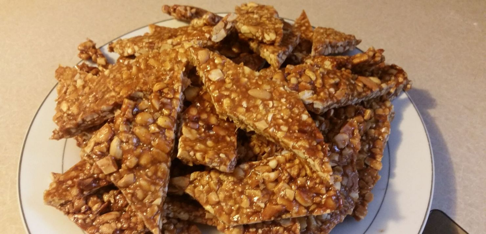

Nkate Cake

Description
Nkate cake is a crunchy nougat made from roasted peanuts.
Ingredients
- 1 lb peanuts (unsalted)
- ½ small lemon
- ½ small lemon
- 1 cup caster sugar
Steps
- Preheat the oven to 320 F / 160 C.
- Spread the raw peanuts evenly on a baking sheet.
- Place the baking sheet in the center of the oven and roast the peanuts for 10 minutes, stirring occasionally.
- Remove the baking sheet from the oven and let the peanuts cool completely.
- Spread the peanuts on a cutting board and crush them with a rolling pin.
- Pour the sugar into a non-stick pan and add the water and a few drops of lemon juice.
- Cook the sugar over medium heat and let it dissolve until it reaches a temperature of 320 F / 160 C on a candy thermometer
- At this point, the sugar syrup should be light in color.
- Add the crushed peanuts to the sugar syrup.
- Stir vigorously for 2 to 3 minutes over low heat.
- Spread the mixture on a previously oiled cutting board (or between 2 sheets of parchment paper) and use a rolling pin to flatten it to a thickness of about ⅓ inch (6 mm)
- Using a large sharp knife, make slight incisions of 2-inch (5 cm) squares very quickly while the mixture is still hot. Operate very quickly before it hardens.
- Once the nkate cake has cooled, cut the precut pieces along the cut lines.